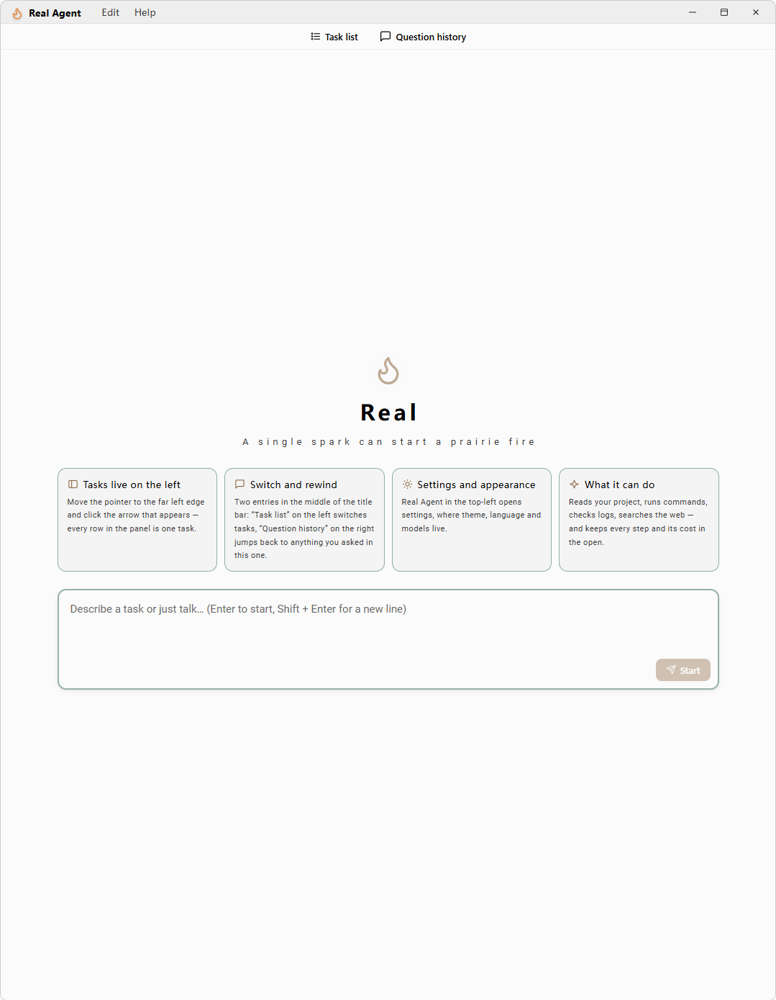
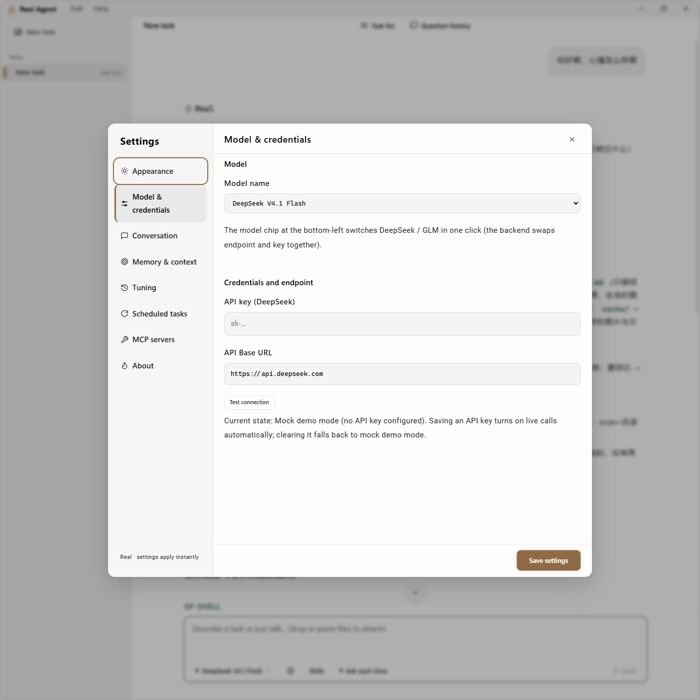
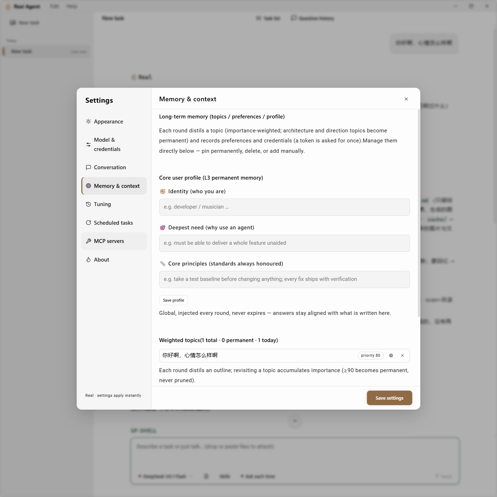

给一个文件夹和一句话。它自己读文件、改文件、跑命令、看报错，一轮一轮改到真正交付——不是聊天，是收敛。

四件事决定了它能不能真的把活干完。
每轮要么真的改了文件，要么记为「无改动」。只说「改好了」却没动文件的那一轮，不算数。
工具回执进流，下一轮由系统核验，而不是相信模型的自述。
删除文件、执行 shell 命令前会先问你。确认门不是安全边界，是防手滑。
工具调用、文件写入、命令输出都留成卡片，随时点开回看。
不需要装 Node、Rust 或任何运行环境。
D:\Real（路径别带中文），双击 real-client.exe%APPDATA%\real-agent，只有对话内容会发给模型接口。
桌面端为长任务设计：左边会话，中间过程，右边产物。

